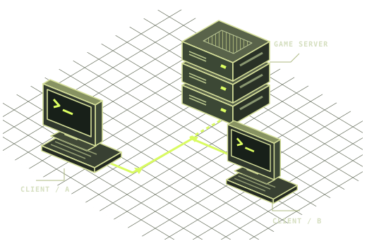

Assemble the party
Filter lobbies by open slots or distance, invite friends, and exchange chat messages before the match.
Lobby and friends APIs ↗Native bindings / Node.js + Electron
Build lobbies, move packets, and run dedicated servers with the Steamworks SDK from JavaScript or TypeScript.

01 / API surface
Filter lobbies by open slots or distance, invite friends, and exchange chat messages before the match.
Lobby and friends APIs ↗Open P2P or direct-IP sockets. Use poll groups to receive messages from several connections together.
Networking sockets ↗Start a dedicated server in its own Node process. Publish its listing, handle callbacks, and check its connection.
Game server guide ↗02 / Quickstart
Build and pack the native addon for your platform. From your game directory, install the resulting tarball using its local path.
pnpm add /path/to/kyeshmz-steamworks.ts-0.4.0.tgzconst steamworks = require(
'@kyeshmz/steamworks.ts'
)
const client = steamworks.init(480)
console.log(client.localplayer.getName())With Steam running and signed in, run node client.cjs to print your Steam display name. App ID 480 is Spacewar.